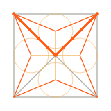
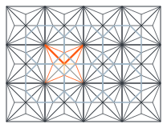
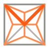
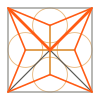
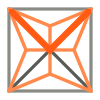

An egg made of one drawing.
Exo is a harness that keeps changing: it learns, grows and adds parts. Its mark is a square, its X, and in each triangle the three lines that halve its corners, meeting at the one point that is the same distance from every side. The top of the X is orange, so it also reads as a V. Its name is written 3X0, the names of the forms it grows through: x0, x, 3xo. Repeat the drawing and you get a lattice. Repeat it in more dimensions and the lattice keeps growing. The egg is that lattice, alive.
01 / The construction
One drawing, built one line at a time.
The mark is the figure from the origin page of the Incentre lattice research, drawn exactly. Nothing in it is placed by eye: every point below follows from the step before it, and the generator (scripts/brand_assets.py) computes each one and checks it against the closed form.




| Triangle | Incentre (where the lines meet), exact | Incentre | Red lines to | Amber line to | Bisector at a square corner |
|---|---|---|---|---|---|
| Bottom | (1, √2 − 1) | (1, 0.4142) | (0, 0), (2, 0) | (1, 1) | 22.5° |
| Right | (3 − √2, 1) | (1.5858, 1) | (2, 0), (2, 2) | (1, 1) | 22.5° |
| Top (in the V) | (1, 3 − √2) | (1, 1.5858) | (2, 2), (0, 2) | (1, 1) | 22.5° |
| Left | (√2 − 1, 1) | (0.4142, 1) | (0, 2), (0, 0) | (1, 1) | 22.5° |
Units: the square has side 2, y points up. In an icon of size N with margin m, a point (u, v) is drawn at (m + u·s, N − m − v·s) with s = (N − 2m)/2. The incentre of a triangle with corners A, B, C is (|BC|·A + |CA|·B + |AB|·C) / perimeter; the generator uses that formula and asserts it lands on the values above.
02 / The 3X0 rule
Exo, written as its forms.
The exosphere grows through three forms: x0, the egg; then x; then 3xo. The wordmark spells the last of them. The E is drawn as a 3, a mirrored E; the X is the drawing's X with its orange V; the O is a zero. Read as letters it still says exo, and the V still says evo.
- The X is the mark without its square: two strokes at exactly 45°, the square's diagonals, with flat horizontal ends, and inside them the twelve bisectors (and the incircles from 96 px tall). Its top half owns the crossing and is always
#ff5b14: the V. Under 24 px tall the lines blur, and the X is the two strokes alone. - The 3 is a mirrored E: three arms off a spine on the right, flat ends on the left, the middle arm shorter. Its right corners are cut at 45°, the same cut as the zero, so its right side reads as the round of a 3.
- The 0 is narrower than it is tall (0.7 of its height, like the 3). Its corners are cut at 45° so that its top is w(√2 − 1) wide: the incentre number again.
- The letters' edges run at 0°, 45° or 90°; only the bisectors inside the X run at 22.5° and 67.5°. Only the X carries orange. On light, the 3, the 0 and the X's lower legs are
#08090a. - Never outline, stretch, rotate or recolour the V. In one-colour print, the V is solid and the lower legs are a 40% tint.
03 / Wordmark
3X0, with the mark as its X.
The X in the middle of the name is the symbol itself: 3, the mark, 0. Two ways were drawn, with the square as a frame and without it. Both use the facet 3 and 0 below and the size rules of the mark: the incircles from 96 px tall, the X and its twelve lines from 24 px, and under 24 px, where the lines blur, the plain X with its V.
Open · no square
The X with its orange V, the twelve bisectors and, when large, the incircles, with no frame. The square is implied by the line ends, so the middle letter is still an X and the word reads 3X0 down to 24 px.

Framed · with the square
The whole mark, square and all, in place of the X. Faithful to the figure, but the frame turns the middle letter into a box: at 24 px and below it reads as 3, an orange tile, 0, not as an X.
Why open. The name has to read before the drawing does. Without the frame the middle glyph keeps the X's silhouette, two 45° strokes corner to corner, and the twelve lines sit inside it, so it reads as 3X0 at the nav's 24 px and as the figure at display size. The frame repeats the square and makes the X a picture. The open form is the nav brand on every page (24 px) and the og image's sign-off. Under 24 px it falls back to the plain X: the 20 and 16 px samples above are that fallback.
The letters: four ways to draw the 3 and the 0
The 3 and the 0 come from the first round. Each is shown at display size, on light, and at 32 and 16 px. Cap height 28 units, stroke 5, so at 16 px the stroke is 2.9 px. The plain-X form here is also the small fallback above.
A · Facet
The 3 and the 0 share one 45° cut, sized by √2 − 1. The cut corners make the mirrored E read as a 3, and the narrow octagon read as a zero, not an O.

B · Block
Square corners only: the plainest mirrored E and a box zero. It reads as a reversed E more than a 3, and the box zero can pass for a D or an O.
C · Incircle
The zero is two halves of an incircle joined by straight sides, with the incentre as its dot: a dotted zero. Clearly a digit, but the only curves in the system, and the dot fills in at 16 px.
D · Bisector
Facet, with the 3's middle arm ending in a point whose edges run at 22.5°, the bisector's angle. A nice nod at display size; at 16 px it cannot be told from A.
Why A for the 3 and the 0. It reads as 3X0 first and exo second, which is the point. It uses one cut for every corner, sized by the same √2 − 1 as the mark, so the 3, the X and the 0 look like one family and like the drawing. With only three angles it stays crisp on a pixel grid, and it is the clearest of the four at 16 px. B loses the 3, C brings in curves, D adds a detail nobody sees at small sizes.
Label form, "3 X 0". The facet glyphs at a lighter stroke (0.18 of the height) and spaced half a height apart. For labels and tight UI; in the terminal the same form is the text 3 X 0 with the X in orange (site/brand/tui-wordmark.txt).
04 / Mark and icons
The figure is the mark.
No dots: each incentre exists only where its triangle's three bisectors meet. The twelve lines are the focus; the square and the X are the frame, with the X's top half in orange as the V. From 96 px the mark adds the four incircles, each centred on an incentre with radius √2 − 1 and touching all three sides. Below 96 px the circles crowd the lines, so the small mark is the square, the X with its V and the twelve lines, in one orange tint so the V stays the strongest orange. At 16 px the lines merge into an orange star; the favicon keeps it as the brief asks, shown enlarged on the right.

Large mark. mark.svg, mark-light.svg. 96 px and up: square, X with its V, twelve bisectors, four incircles.

Small mark. mark-small.svg, mark-small-light.svg. Under 96 px: square, X with its V, twelve bisectors.
App icon. app-icon.svg (square; platforms round it), app-icon-1024.png, icon-512, icon-192, apple-touch-icon (180): the large mark.

Favicons. favicon.svg and favicon-32 are the small mark; favicon-16 puts the square on the tile's edge with 1 px lines (shown at 4× on the right).


05 / The living egg
A pulsing matrix of information.
The site's orb, rebuilt from the lattice. Each cell is one cube of the honeycomb, with its six incentre dots. Information moves as packets along the edges; a cell lights when one passes through it, and its lines to the centre glow. A heartbeat in the core sends packets out; more activity means a faster beat and more traffic. The stage adds cells, structure, a dimension and brightness. Fractional stages blend, so an evolution can be animated.
0 · Egg. One cell, the yolk: six dots, an octahedron, the top dot orange. A closed shell made of the same honeycomb, one ring out.
1 · Hatchling. The six face cells join; every new link is one edge of length 2(√2 − 1). The shell cracks and falls away.
2 · Lattice. Nineteen cells: the honeycomb as an orb. The first cube appears, with the drawing's lines inside it.
3 · Hyper. The fourth dimension unfolds out of the third: 33 cells of 8 dots, turning through the fourth axis. The new links are steel blue.
| Stage | Name | Dimension | Cells | Dots | Shell | Brightness |
|---|---|---|---|---|---|---|
| 0 | egg | 3 | 1 | 6 | closed | 0.62 |
| 1 | hatchling | 3 | 7 | 42 | cracking | 0.74 |
| 2 | lattice | 3 | 19 | 114 | gone | 0.86 |
| 3 | hyper | 4 | 33 | 264 | gone | 1 |
| 4 | spare | 5 | 51 | 510 | gone | 1 |
<script src="/brand/egg.js"></script>
var egg = ExoEgg.mount(canvas, { stage: 0, activity: 0.5 });
egg.setStage(1.5); // 0..4, eases there; { immediate: true } jumps
egg.setActivity(0.8); // 0..1: heartbeat rate and traffic
egg.pulse(6); // send 6 packets out of the core, e.g. when a turn starts
egg.getStage(); egg.pause(); egg.resume(); egg.destroy();
// or with no script of your own:
<canvas data-exo-egg data-stage="2" data-activity="0.6"></canvas>
Canvas 2D, no libraries, one 24 KB file (unminified). Under prefers-reduced-motion it draws one still frame with a lit path and never animates. It pauses off screen and in background tabs. The full API is in docs/BRAND.md.
06 / Colour
The site's palette, plus one tint for the mark.
Orange is the signal: the V, the corner bisectors, information in motion. The soft amber is the origin figure's amber, used only in the large mark, for the lines to the centre and the incircles. Steel blue is system knowledge, and in the egg it marks the dimension that was added. Everything else is structure.
07 / Terminal
The mark in braille, the name in text.
Text-mode renderings for the terminal client, written by the generator. The mark is the small form in braille cells: the square, the X and its twelve bisectors; orange cells hold the V. The name is the label form as text, 3 X 0, with the X in orange: a cell cannot be half orange.
⢰⣶⢖⣒⠒⠒⠒⠒⢒⣒⢶⣶ ⢸⢱⡑⢌⠉⠒⡖⠊⢉⠔⣱⢹ ⢸ ⢣ ⠑⢄⣇⠔⠁⢠⠃⢸ ⢸ ⡸⠉⢉⠝⡟⢍⠉⠹⡀⢸ ⢸⢰⢃⠔⠁⣀⣇⡀⠑⢄⢳⢸ ⢸⣷⣕⣚⣉⣀⣀⣈⣙⣒⣵⣿
Mark, 12 × 6 cells. site/brand/tui-mark.txt
3 X 0
Name, one line. site/brand/tui-wordmark.txt
⡠⠤⠤⠤⣀ ⡰⠋ ⠈⠓⡀ ⡸ ⣠⢦⡀ ⠹ ⡅ ⠘⢿⡞⣋⣿⣄ ⡇ ⠇ ⠈⠻⡽⠊⠉ ⠇ ⠹⡄ ⡼⠁ ⠈⠓⠆⠤⠤⠄⠖⠋
Egg, stage 0, 14 × 7 cells: the yolk inside its shell. site/brand/tui-egg.txt
08 / Credit
Where the figure comes from.
The mark is figure 1 of the origin page of the open research project Incentre lattice (aska-digital/incentre-lattice): the square, its diagonals, the four incentres, and each incentre's three bisectors, red to the corners and amber to the centre. This design follows that project for every number: the incentre height √2 − 1, the 22.5° bisector, the 4.8.8 tiling, the truncated cubic honeycomb and its n-dimensional form. The mark borrows the geometry and the red/amber split of the lines, mapped to Exo's orange and a soft amber; that project's own colours and type stay its own.
The classical mathematics behind it is old and belongs to everyone: the incentre and the medial axis; the Wythoff construction (Wythoff, 1918) as developed by H. S. M. Coxeter; the uniform tilings and honeycombs.
The egg is a rework of the orb on the Exo front page, which was a shell of linked nodes around an orange core.